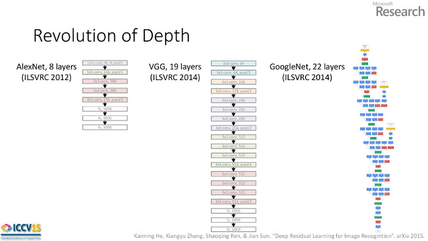
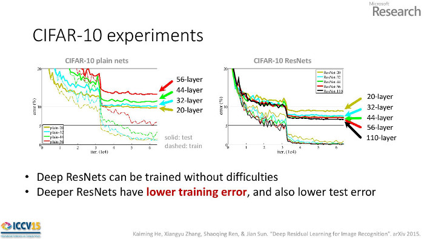
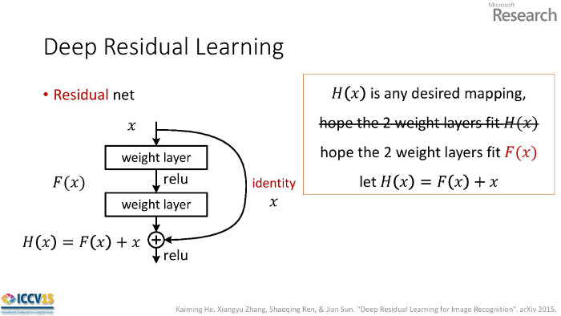

Abstract
Understanding the content of an image is a long-standing challenge in computer vision. In the last five years, the state-of-the art has advanced far beyond scanning checks and facial recognition to the point where, on certain benchmarks, object classification performed by a machine exceeds human level accuracy.
A representative benchmark is the ImageNet Large Scale Visual Recognition Challenge which provides 1.2 million training images for identifying 1000 classes of objects. Companies like Facebook, Google, and Microsoft use this challenge as a proving ground for technology that will monetize images. In 2014 Google won the ImageNet competition with their "Inception" network and an accuracy of 6.7%. The winning network in 2015 was Microsoft Research's "ResNet" with an accuracy of 3.6%.
The winning architecture is notable because it commands attention simply by it's striking improvement over last year's result. Second, the improvement was achieved using a reformulated network structure rather than by using additional parameters to learn coupled with additional computation. Third, their ResNet is simpler than Inception, which won in 2014, and has opened a new path for research and future improvements. Taking together, Residual Networks represent an important technical and conceptual leap in deep learning.
Technical Summary of He's Presentation
The Microsoft Research team of Kaiming He, Xiangyu Zhang, Shaoqing Ren, Jian Sun won the 2015 ImageNet competition in a number of categories. In the object detection task an ensemble of residual models achieved a 3.6% classification error rate.
Deeper Models
Anticipating their 152 layer winning network (the deepest to date), He et al. noticed each winning network was deeper than the year before. This raises the question they pose, "Is learning better networks as simple as stacking more layers?"

The answer is "yes" and "no". He showed that adding traditional layers made a model perform worse (no). On the left side of the figure below, we see deeper networks perform worse. This is counterintuitive because the extra 12 layers in the 56-layer network could learn the identity shortcut and thus perform as well as the 44-layer network. In practice, the deeper plain networks converge to worse local optima than shallower counterparts.
However, with a residual architecture adding layers improves performance (yes). When the identity connection is baked into the network it that helps the deeper networks converge to better solutions.

Residual Units
A basic residual unit consists of two convolution layers with a shortcut connection across both layers. Let the two weight layers constitute the function F(x) and the desired function be H(x).
For a plain network the weights learn H(x).
For a residual network the weights learn H(x)-x.

The network is learning a function with respect to the identity function. It's not clear why this works better than, say, initializing the weights in a plain network identity matrices. Not too deep enough
If deeper models are better, why stop at 152 layers? The authors tried an "aggressively deep" model with 1202 layers but its error was higher.
Not too deep enough
If deeper models are better, why stop at 152 layers? The authors tried an "aggressively deep" model with 1202 layers but its error was higher.
Code
If you want to see some code...
Original Recipe, Caffe
Facebook, Torch
Yours Truly, Keras
Works with Theano or TensorFlow as the backend.